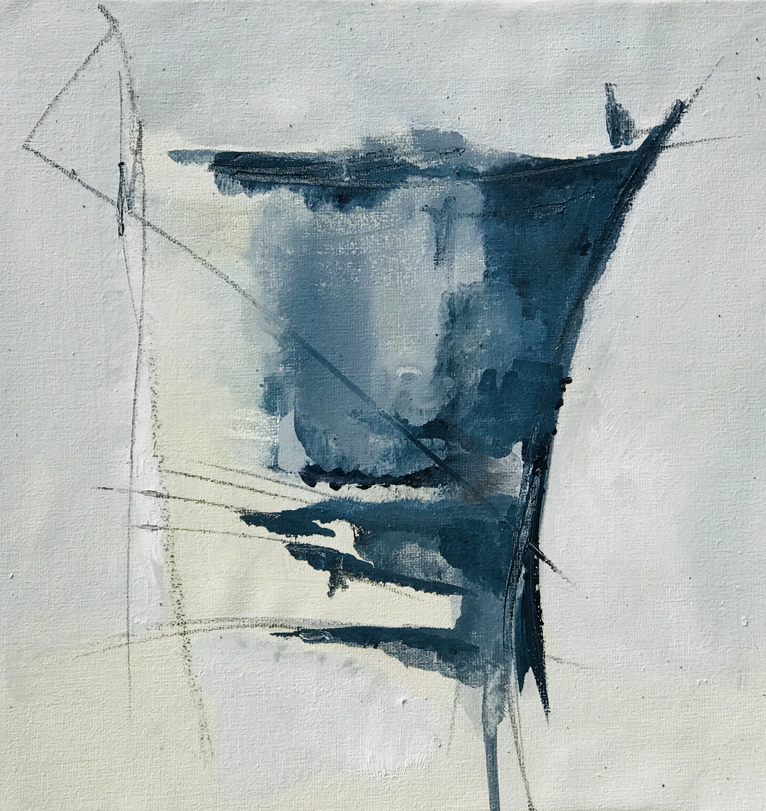

Ines Griolli nacio en buenos aires en enero de 1970
Desde el año 1994 se conecto al diseño desde varias areas..
Estudio paisajismo en la escuela de diseño y paisaje de belgrano y para luego perfeccionar y sumar mas arte a sus proyectos en el 2001 hizo la carrera de paisajista en la escuela Pampa Infinita .
Luego en el año 2012 se incorpora al taller de la artista plastica Paula Rivero empezando a exponer en diversas y variadas muestras de arte .
En el año en curso 2019 asiste a las clinicas de arte del internacionalmente reconocido artista plastico Gustavo Lopez Armentia.
Mi obra guarda un caos inicial que fluye, deja sus huellas y finalmente se deja contener.
Necesita de los opuestos, mutando energías llegando a su propio equilibrio.
Guarda misterios velados listos para descubrir.